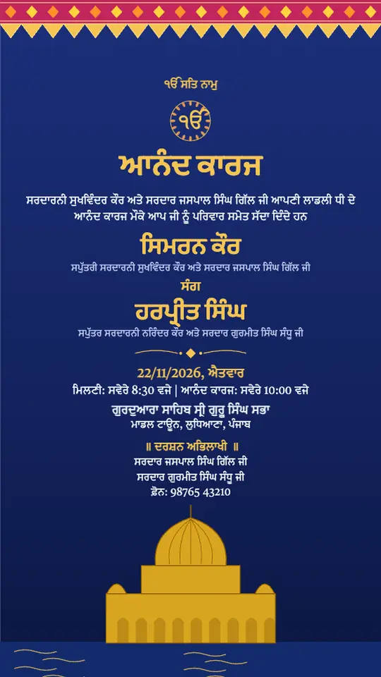

Gujarati · Hindi · Marathi · Punjabi · Tamil
Punjabi Anand Karaj cards and invitation designs
A Sikh wedding card is usually called an Anand Karaj card, after the ceremony itself, and in Punjabi the invitation is a ਸੱਦਾ ਪੱਤਰ. It opens with ੴ ਸਤਿ ਨਾਮੁ, names the parents as Sardar and Sardarni with ਜੀ, and gives the milni and Anand Karaj times at the gurdwara, usually in the morning, followed by lunch. Many Punjabi families also send separate cards for the roka or mangni, the mayun and mehndi, and the jaago night before the wedding.
The designs below are the ones whose sample text is written in Punjabi (Gurmukhi), grouped by ceremony, and all of them open with Ek Onkar. Anand Karaj Royal Blue is a six-page wedding card with the functions, the lavan, the family names and a closing message; the others are a single card. Any design can be switched to another language in the editor, and any other design can be switched to Punjabi, which fills in the Punjabi sample wording.
With phonetic typing on, type names in English letters (simran kaur, harpreet singh) and the editor turns each word into Gurmukhi as you type. Press Esc to keep a word in English.
For the wording itself, read Anand Karaj card wording.
Ring Ceremony

Misri Roka Phulkari
Ring Ceremony · Ek Onkar
For the roka or mangni, sealed with misri in many Punjabi homes, with a phulkari star on blush pink and the heading ਮੰਗਣੀ ਦੀ ਰਸਮ under Ek Onkar.
Mehendi

Mayun Night Parandi
Mehendi · Ek Onkar
Gold parandi tassels and a red woven border for the mayun and mehndi night, written in Punjabi under ਮਹਿੰਦੀ ਦੀ ਰਸਮ.
Sangeet

Dhol Jaago Phulkari
Sangeet · Ek Onkar
A red and gold dhol under a phulkari-style border for the jaago night, with the sample inviting guests to ਗੀਤਾਂ, ਗਿੱਧੇ ਅਤੇ ਭੰਗੜੇ ਦੀ ਸ਼ਾਮ, an evening of songs, giddha and bhangra.
Wedding (Vivah)

Anand Karaj Royal Blue
Wedding (Vivah) · Ek Onkar
The Sikh wedding card: ਆਨੰਦ ਕਾਰਜ in gold on royal blue above a gurdwara dome, with the milni and Anand Karaj times, and inner pages for the Sukhmani Sahib path, the lavan and the family names.
Looking for another ceremony or language? See every design by ceremony.